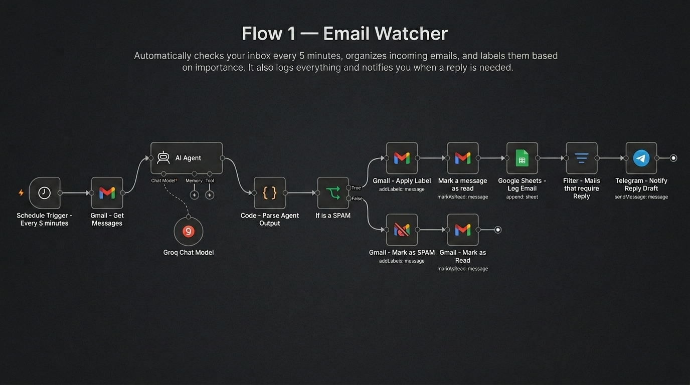
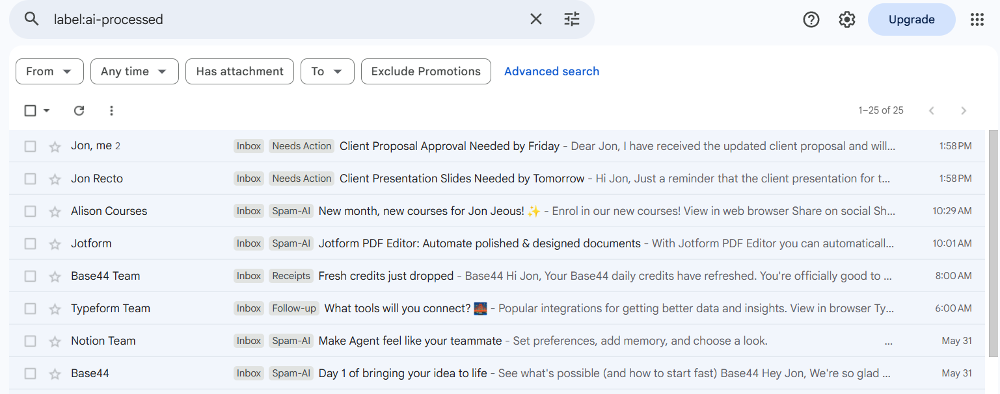
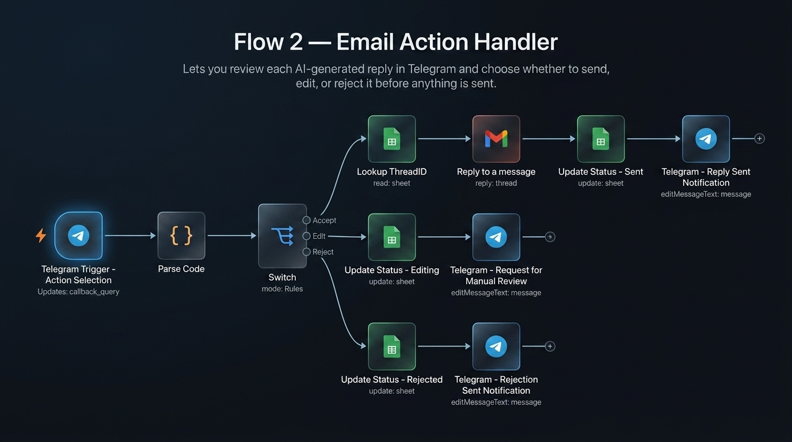
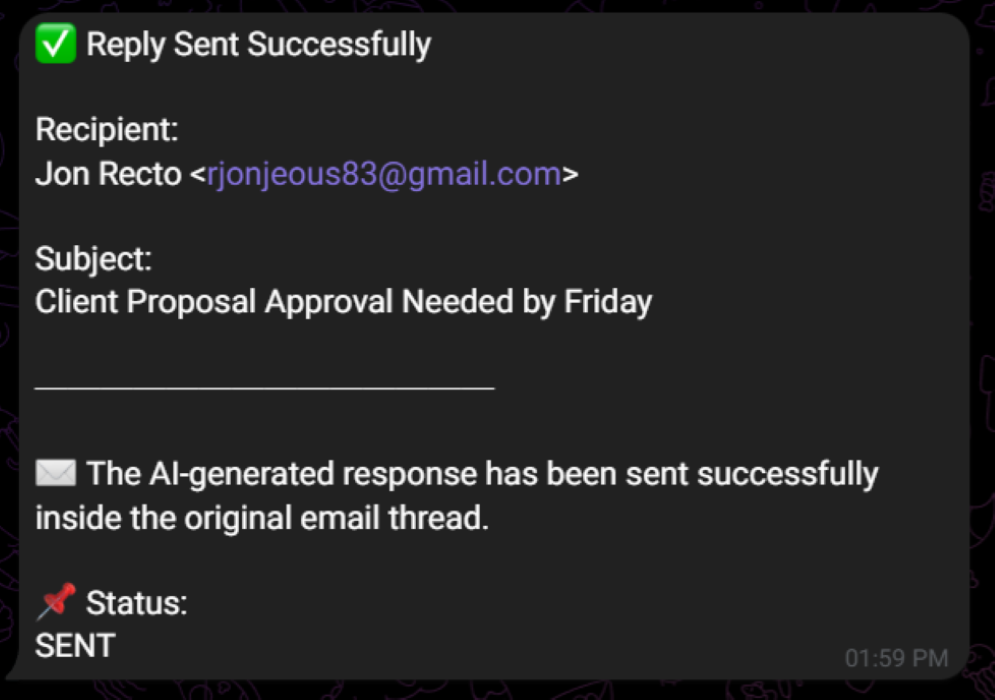
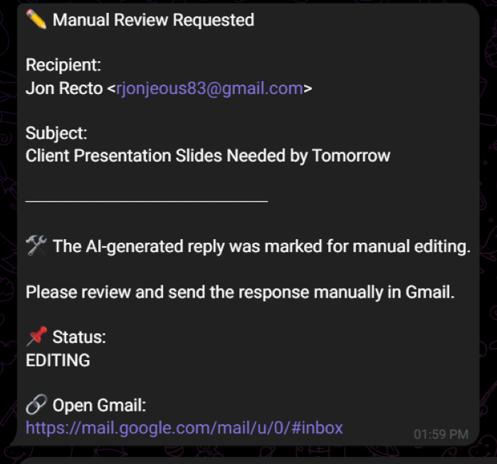
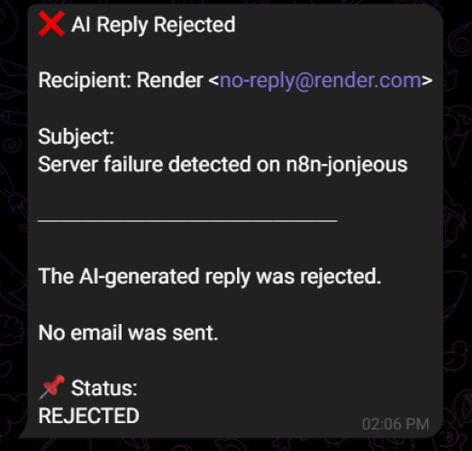
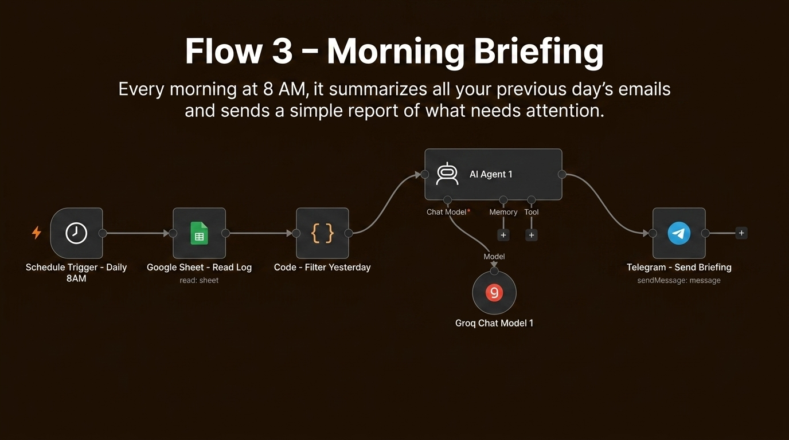
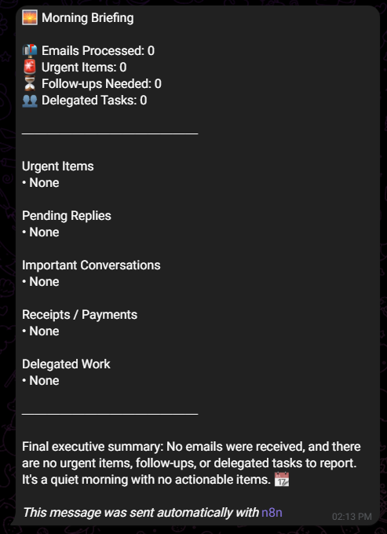
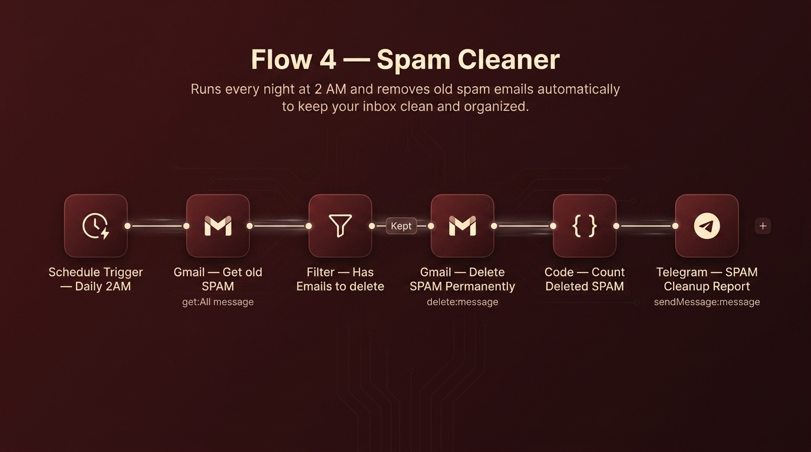
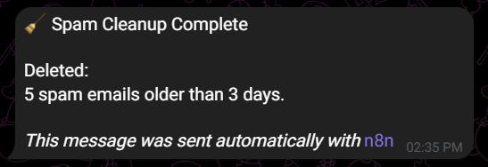

AI Email Assistant That Automates Inbox Management and Saves Hours Every Week
Stop spending hours sorting, prioritizing, and writing emails. This AI-powered system handles your inbox automatically — classifying every email, drafting replies, and delivering a morning summary — while you stay in full control.
100%
Inbox management automated
5 min
Faster email response handling
80%+
Reduction in manual email work
Client
Personal Project
Role
AI Automation Specialist
Timeline
2026
Tools
n8n · Gmail · Telegram · Groq · Google Sheets

The Problem: Email Is Eating Your Day
For most business owners and professionals, the inbox has become a second job. You check it constantly, respond to the same types of messages over and over, and still feel like you're always behind. The result? Lost focus, missed opportunities, and hours of your week spent on low-value tasks.
Sound familiar?
- You check your inbox multiple times a day, interrupting deep work
- Important emails get buried under newsletters, receipts, and spam
- You write similar replies repeatedly — from your own memory every time
- Follow-ups fall through the cracks because there's no system
- Spam keeps building up, cluttering your view of what actually matters
- Decision fatigue sets in before the real work even begins
"I used to spend over 2 hours a day just dealing with email. Now I get a morning briefing on Telegram, approve a few AI-drafted replies, and I'm done."
The Solution: An AI Assistant for Your Inbox
This automation system works like a dedicated inbox assistant running 24/7 in the background. It reads every incoming email, figures out what it is and what action it needs, drafts a reply if required, and sends you a simple notification to approve, edit, or skip. You stay in control — without spending time on the manual work.
Every morning, you get a clean briefing of what happened overnight. Every night, your spam folder is cleared automatically. Your inbox stays organized without you lifting a finger.
Before Automation
- Check inbox repeatedly throughout the day
- Write every response manually from scratch
- Sort and label emails by hand
- Manually delete spam as it accumulates
- No daily overview — always guessing what needs attention
After Automation
- AI categorizes every email automatically, 24/7
- AI drafts context-aware replies for your review
- One-tap approve, edit, or reject via Telegram
- Spam deleted automatically every night
- Daily morning briefing delivered to your phone
How It Works — 4 Simple Steps
The entire system runs quietly in the background. Here's what happens every time a new email arrives:
Email Arrives
A new message lands in your inbox. The system detects it within minutes.
AI Analyzes & Organizes
The AI reads the email, assigns a category, and drafts a reply if one is needed.
You Get a Notification
A Telegram message arrives with a summary of the email and the AI-drafted reply.
Approve, Edit, or Reject
Tap one button. The system handles the rest — or saves the email for your manual review.
Key Features
Everything you need to reclaim your time from email — without losing control of your communication.
AI Email Classification
Automatically identifies what every email is — urgent, follow-up, receipt, delegated, or spam — and keeps your inbox structured without any manual sorting.
Smart Reply Drafting
Generates context-aware, professional replies based on the email content. You review and approve — no writing from scratch required.
Human Approval Workflow
No email is ever sent without your say. Every AI draft goes through a one-tap Telegram approval step, keeping you fully in control at all times.
Daily Executive Summary
Every morning at 8 AM, a concise briefing lands in your Telegram — covering urgent items, follow-ups, and a full AI-generated overview of the previous day.
Automated Spam Cleanup
Every night, the system silently purges spam from your inbox and sends a short report confirming what was removed. Your inbox stays clean without any manual effort.
Under the Hood — See It in Action
Each automation runs independently so nothing interferes with anything else. Click any workflow below to see exactly what it does.
Email Watcher — Reads & Organizes Your Inbox

The core flow runs around the clock. Every 5 minutes it fetches unread Gmail messages, passes each through a Groq AI Agent for classification, applies the appropriate Gmail label, logs everything to Google Sheets, and — if a reply is needed — fires a Telegram notification with the AI-generated draft.
Steps
- 1Schedule Trigger fires every 5 minutes
- 2Gmail — Get Messages fetches all unread emails
- 3Groq AI Agent classifies each email and generates a draft reply if needed
- 4Code node parses the agent's structured output
- 5If SPAM → mark as spam and read; otherwise → apply label + mark read
- 6Google Sheets logs the full email record
- 7Filter checks if a reply is needed → Telegram sends notification with draft
Gmail labels applied by the AI
The AI Agent assigns one label per email based on its classification. Labels are created in Gmail once during setup and reused on every run.

Inbox view — emails tagged with AI-assigned labels
💡 Every processed email is automatically tagged with an AI-Processed label and marked as read. This prevents the same email from being analyzed again during future automation cycles and avoids duplicate processing.
Google Sheets — email activity log
Every email processed by Flow 1 is appended as a new row in Google Sheets. This log is the shared memory of the entire system — Flow 2 reads it to find thread IDs when sending replies, and Flow 3 reads it every morning to build the briefing.
Columns logged per email

Google Sheets log — one row per processed email with full metadata
💡 The Status column is the handoff point between flows — Flow 1 writes Drafted, Flow 2 updates it to sent, editing, or rejected after the user taps a button on Telegram.
Approval Handler — Your One-Tap Reply Control

This flow is what makes the system safe to use. It listens for Telegram callback queries (button taps) and routes the decision through a Switch node — executing the right action for each choice before confirming back to Telegram.
User actions
Output example — Telegram approval notification
When Flow 1 detects an email that needs a reply, it fires this Telegram message. It contains the sender, subject, AI category, a plain-language summary, and the full AI-drafted reply — with inline buttons at the bottom for instant action.

Incoming notification — AI summary + draft reply + action buttons
💡 Only emails where the AI determines a reply is needed trigger this notification. Newsletters, receipts, and spam are labeled and logged silently without disturbing the user.
Output example — Confirmation responses
After tapping a button, the original Telegram message is updated in-place with a confirmation. Each outcome has its own response — no new message clutters the chat.

✅ Accept — reply sent, status: SENT

✏️ Edit — manual review requested

❌ Reject — draft discarded, no email sent
💡 All three outcomes update the Google Sheets Status column immediately — keeping the log in sync with whatever the user decided.
Morning Briefing — Your Daily Inbox Summary

Every morning at 8 AM, this flow reads the previous day's email log from Google Sheets, filters for yesterday's records, sends them to a Groq AI Agent that generates a structured briefing, and delivers it straight to Telegram.
Briefing includes
- Total emails processed, with counts per category
- Urgent items that need immediate attention
- Pending follow-ups still awaiting a response
- Important conversations and receipts/payments
- Final AI-generated executive summary
Output example — Morning Briefing on Telegram

Daily briefing delivered at 8:00 AM — urgent items, follow-ups, summary
💡 The briefing is generated from the Google Sheets log — not from Gmail directly. This means it only includes emails already processed by Flow 1, keeping the data clean and consistent.
Spam Cleaner — Overnight Inbox Maintenance

While everything else sleeps, this flow quietly clears the clutter. It runs at 2 AM, fetches old spam emails, checks if there's anything to delete, permanently removes them, counts the result, and sends a short cleanup report to Telegram.
Steps
- 1Schedule Trigger fires daily at 2:00 AM
- 2Gmail — Get old SPAM fetches emails in the spam folder older than 3 days
- 3Filter — Has Emails to delete checks whether there's anything to act on
- 4Gmail — Delete SPAM Permanently removes qualifying messages
- 5Code — Count Deleted SPAM tallies the number removed
- 6Telegram — SPAM Cleanup Report delivers the nightly summary
Output — Telegram cleanup report
A short summary arrives on Telegram every morning confirming how many spam emails were deleted overnight.

Overnight cleanup report — spam count deleted and confirmation
Challenges & How We Solved Them
Maintaining User Trust
When AI is drafting emails on your behalf, trust is everything. The solution was a non-negotiable human approval step built into every outgoing reply. No email is ever sent automatically — every AI-generated draft must be explicitly approved through Telegram before it reaches a recipient. You stay in control, and the AI stays a tool, not a decision-maker.
Preventing Duplicate Processing
Without a way to track which emails had already been handled, the system could repeatedly re-process the same messages — creating duplicate notifications and cluttered logs. The fix: every processed email gets an "AI-Processed" label applied and is marked as read automatically. This ensures each email is touched exactly once, keeping everything clean and consistent.
Results & Business Impact
Since deploying this system, the inbox has gone from a daily time sink to a managed, low-effort task. Here's the real-world impact:
Hours saved weekly
Manual inbox management time dropped dramatically — from multiple daily check-ins to a single morning review.
Faster response workflow
AI-drafted replies are ready within minutes of an email arriving. Approving takes seconds instead of writing from scratch.
Zero repetitive tasks
Sorting, labeling, deleting spam, and writing standard replies are now fully automated — no manual effort required.
Lower decision fatigue
Instead of processing a chaotic inbox, you get a clean morning briefing with only what needs your attention — reducing mental overhead significantly.
Tech Stack
- n8n — the automation platform that runs all four workflows and handles scheduling
- Gmail — inbox access, email labeling, reply threading, and spam management
- Groq AI — powers email classification, prioritization, and reply generation
- Telegram — delivers real-time notifications and handles one-tap approval buttons
- Google Sheets — shared activity log that tracks every processed email across all workflows
Key Learnings
- AI-assisted workflows dramatically reduce manual overhead when designed around real user behavior
- Human-in-the-loop automation builds trust — users adopt tools faster when they stay in control
- Connecting multiple services (email, messaging, AI, spreadsheets) creates compounding productivity gains
- Modular automation architecture makes the system easier to update, scale, and troubleshoot over time
- Edge case handling (duplicates, empty results, missing fields) is what separates a reliable system from a fragile one
Product Roadmap — Future Improvements
- Priority scoring with a weighted urgency model based on sender history and keywords
- Smart follow-up reminders for threads that haven't received a reply within N days
- Multi-account support across multiple inboxes
- A web dashboard to replace the Telegram control interface
- Sentiment detection to surface emotionally urgent emails before they get buried
Interested in a similar system for your business? Get in touch — I'm available for new projects.